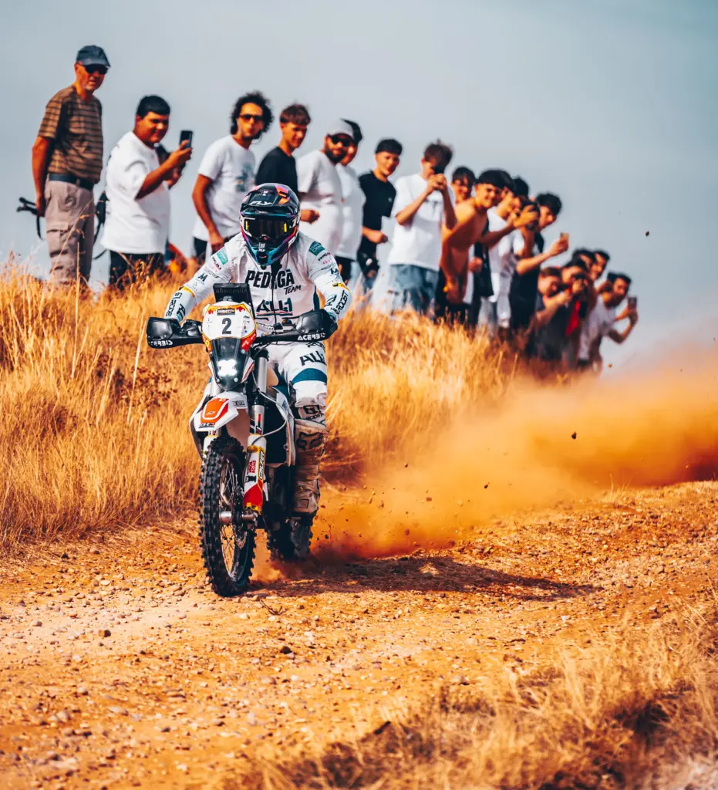

Los mejores pilotos dakarianos toman la salida en Cuenca. Josep Pedró, Javier Vega y Urko Garmendia darán un recital en Cuenca. Los pilotos recorrerán más de 300 kilómetros por los parajes más impresionantes de Castilla-La Mancha. Los aficionados podrán disfrutar de los pilotos en la Ceremonia del Podio de Salida.
En apenas diez días la Baja TT Cuenca convertirá Castilla-La Mancha en el epicentro del rally raid europeo. La prueba, puntuable tanto para la European Baja Championship como para el Campeonato de España de Rally Raid, promete emociones fuertes desde el primer kilómetro, y el cartel de salida ya lo deja claro porque las inscripciones de los pilotos de motos marchan a buen ritmo. Cuenca será para los moteros la primera cita puntuable para la European Baja Championship, y la segunda del Campeonato de España de Rally Raid. Así que, hasta la ciudad, llegarán los primeros espadas de las dos ruedas, donde uno de los primeros en confirmar su asistencia en Cuenca ha sido el dakariano Josep Pedró, con su KTM, que llega a la carrera para defender su corona. Josep Pedró es el vigente Campeón de España de Rally Raid, título que ganó el año pasado en el XI Rallye TT de Cuenca, tras una carrera muy disputada donde se jugaba el título con Javier Vega. El catalán residente en Madrid, con tres dakares a su espalda, conoce bien el terreno conquense donde este año volverá a dar un recital de navegación y pilotaje. Por su parte, el también dakariano Javier Vega, tomara la salida en Cuenca con su Kove 450 Rally. El piloto madrileño con más de siete dakares en su currículum intentará ganar en Cuenca para resarcirse de perder el nacional el año pasado por un problema en sus neumáticos. El vasco Urko Garmendia con Husqvarna FE, que el año pasado pudo haber ganado el Raid TT Cuenca pero una penalización le bajó hasta la tercera posición, también estará en la línea de salida. Los aficionados también podrán disfrutar con Bruno Bozzo, el joven piloto chileno afincado en Valencia. Bruno Bozzo, compagina la universidad con su participación en Rally Cross Country, Enduro y Motocross. En su joven carrera como piloto ha ido Campeón de Chile de Motocross, Campeón Mundial Enduro Six Days y Campeón de España de Enduro 2024, entre otros títulos. En la linea de salida también estará Miguel Caravaca con KTM, el madrileño José Maria Clemente con Triumph, y el canario Iván Concepción, que además es capitán de barco, profesión con la que ha surcado los mares del mundo entero. El dakariano Cristian España, el vasco Ion Ander Guereta y el ilerdense Ángel Bellmunt con KTM, también optarán al título en Cuenca. Más de 300 kilómetros de pura adrenalina La batalla arrancará el viernes 8 de mayo con una prólogo de 10 kilómetros que marcará el orden de salida. Pero el verdadero desafío llegará el fin de semana con más de 300 kilómetros cronometrados entre sábado y domingo, atravesando algunos de los paisajes más espectaculares de Castilla-La Mancha.